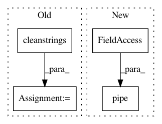

590028f40e74f82c3d00f0bc48b4cf415c97bfce,pudl/transform/eia860.py,,generators,#Any#Any#,51
Before Change
gens_df = pudl.helpers.month_year_to_date(gens_df)
gens_df["fuel_type_code_pudl"] = \
pudl.helpers.cleanstrings(gens_df["energy_source_code_1"],
pc.fuel_type_eia860_simple_map)
// Transform columns to a canonical form to reduce duplicates:
// No leading or trailing whitespace:
gens_df = \
pudl.helpers.strip_lower(gens_df,
columns=["rto_iso_lmp_node_id",
"rto_iso_location_wholesale_reporting_id"])
// Ensure plant IDs are integers.
gens_df["plant_id_eia"] = gens_df["plant_id_eia"].astype(int)
gens_df["generator_id"] = gens_df["generator_id"].astype(str)
gens_df["utility_id_eia"] = gens_df["utility_id_eia"].astype(int)
gens_df = pudl.helpers.convert_to_date(gens_df)
After Change
gens_df[column] = gens_df[column].replace(
to_replace=["Y", "N"], value=[True, False])
gens_df = (
gens_df.
pipe(pudl.helpers.month_year_to_date).
assign(fuel_type_code_pudl=lambda x: pudl.helpers.cleanstrings_series(
x["energy_source_code_1"], pc.fuel_type_eia860_simple_map)).
pipe(pudl.helpers.strip_lower,
columns=["rto_iso_lmp_node_id",
"rto_iso_location_wholesale_reporting_id"]).
astype({
"plant_id_eia": int,
"generator_id": str,
"utility_id_eia": int
}).
pipe(pudl.helpers.convert_to_date)
)
eia860_transformed_dfs["generators_eia860"] = gens_df
return eia860_transformed_dfs
In pattern: SUPERPATTERN
Frequency: 3
Non-data size: 4
Instances
Project Name: catalyst-cooperative/pudl
Commit Name: 590028f40e74f82c3d00f0bc48b4cf415c97bfce
Time: 2019-06-13
Author: zane.selvans@catalyst.coop
File Name: pudl/transform/eia860.py
Class Name:
Method Name: generators
Project Name: catalyst-cooperative/pudl
Commit Name: 590028f40e74f82c3d00f0bc48b4cf415c97bfce
Time: 2019-06-13
Author: zane.selvans@catalyst.coop
File Name: pudl/transform/ferc1.py
Class Name:
Method Name: fuel
Project Name: catalyst-cooperative/pudl
Commit Name: 590028f40e74f82c3d00f0bc48b4cf415c97bfce
Time: 2019-06-13
Author: zane.selvans@catalyst.coop
File Name: pudl/transform/ferc1.py
Class Name:
Method Name: plants_hydro